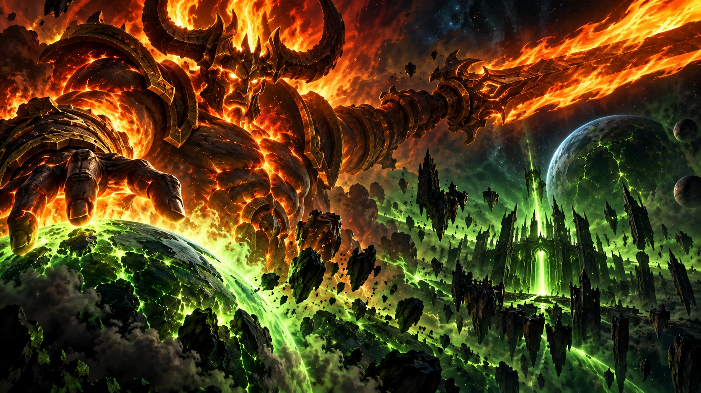
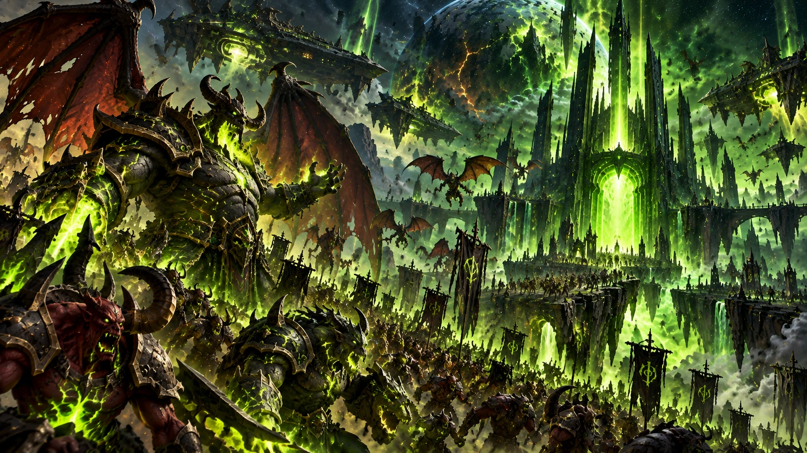
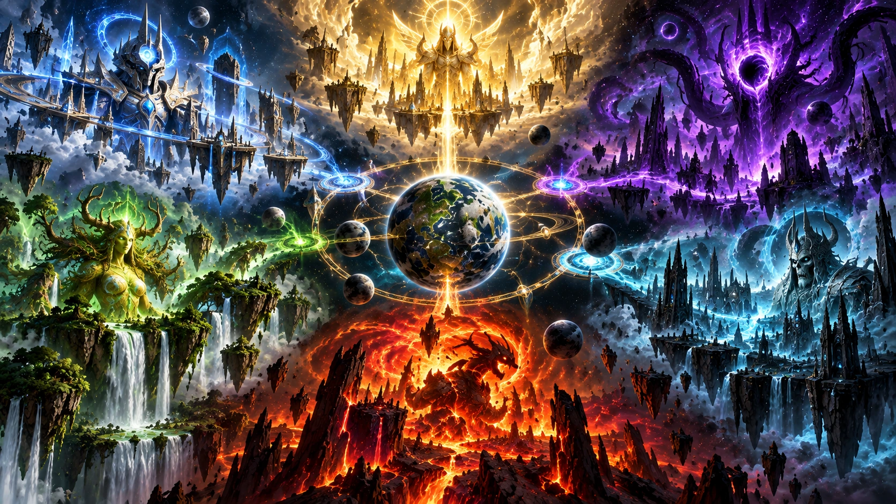
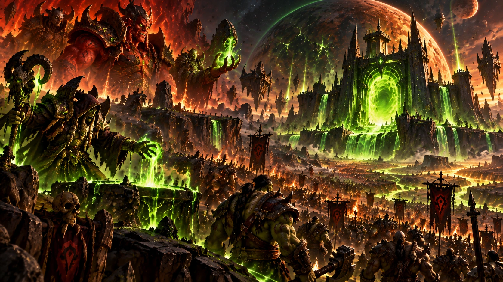
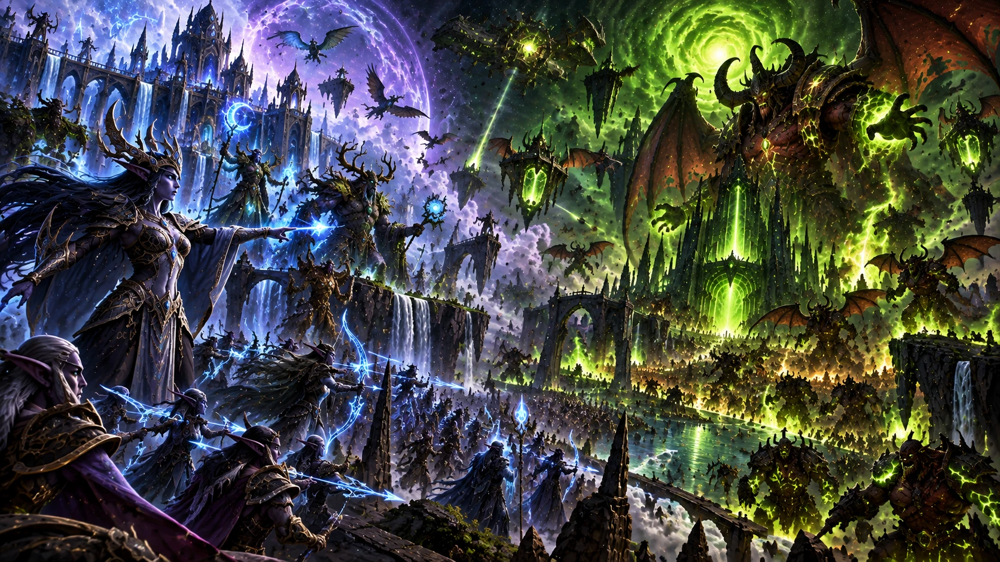
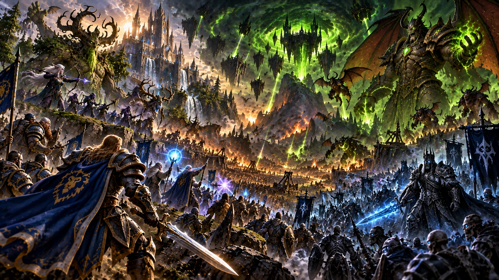
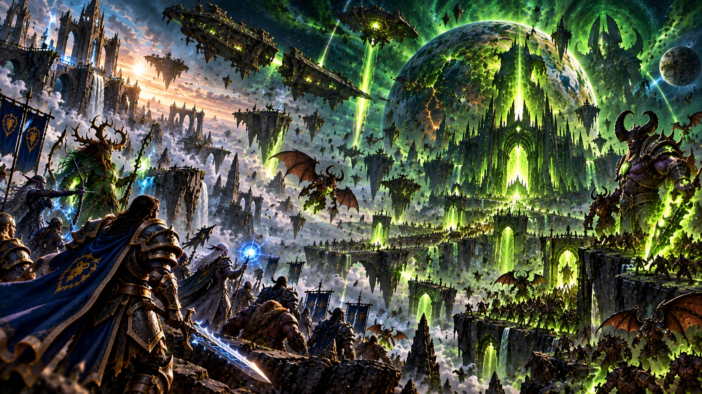
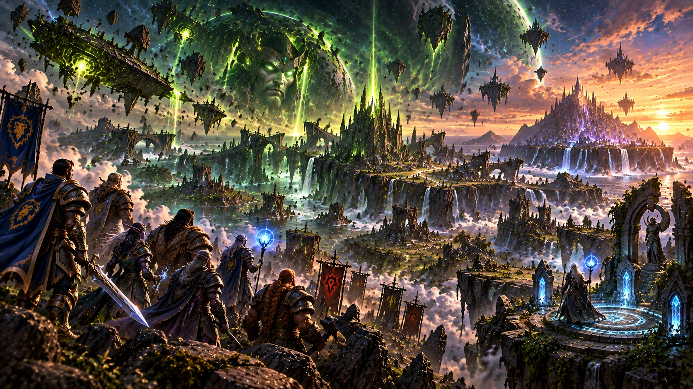

Des origines de Sargeras à la dernière grande invasion d’Azeroth : explorez les forces qui ont façonné les guerres les plus anciennes de Warcraft.


CHAPITRE 01 / 08
Les six forces cosmiques
Une création traversée de puissances rivales

L’univers de Warcraft ne se limite pas aux royaumes d’Azeroth. Six forces fondamentales y exercent leur influence : la Lumière et le Vide, la Vie et la Mort, l’Ordre et le Désordre. Chacune possède ses manifestations, ses serviteurs et sa propre manière de concevoir l’équilibre du cosmos.
La magie arcanique est étroitement associée à l’Ordre, tandis que l’énergie gangrenée — le fel — incarne le Désordre. La Lumière peut inspirer le courage, mais ses adeptes ne sont pas tous bienveillants. De même, les forces de la Mort et du Vide poursuivent des desseins complexes, souvent incompréhensibles aux mortels.
Ce cadre cosmique permet de comprendre pourquoi Azeroth attire tant de puissances : son âme-monde pourrait influencer le destin même de la création.
✦ À RETENIRLes conflits d’Azeroth sont aussi les reflets de rivalités cosmiques beaucoup plus anciennes.
1 / 8
CHAPITRE 02 / 08
Sargeras, le Titan déchu
Du défenseur des mondes au destructeur
Sargeras appartenait au Panthéon, l’assemblée des Titans vouée à ordonner et protéger les mondes. Il parcourait l’univers pour affronter les démons et contenir les dangers du Néant distordu. Ses victoires firent de lui un champion presque invincible.
Au cours de sa mission, Sargeras découvrit la menace des Seigneurs du Vide et la possibilité qu’une âme-monde soit corrompue. Cette révélation bouleversa sa vision de l’univers. Convaincu que la création entière risquait de tomber sous l’emprise du Vide, il en vint à défendre une conclusion terrible : détruire les mondes avant qu’ils ne puissent être corrompus.
Sa rupture avec le Panthéon ne fut pas seulement une rébellion. Elle transforma un protecteur en adversaire de tout ce qu’il avait autrefois juré de préserver.
✦ À RETENIRSargeras croit empêcher une catastrophe cosmique, mais sa réponse menace l’existence même des mondes.
2 / 8
CHAPITRE 03 / 08
La naissance de la Légion ardente
Une armée pour embraser la création
Après sa chute, Sargeras entreprit de réunir les démons du Néant distordu en une armée immense. La Légion ardente naquit de cette volonté de conquête et de destruction. Ses forces comprennent des créatures aux capacités très diverses, des soldats innombrables aux puissants stratèges capables de corrompre des civilisations entières.
Pour diriger ses campagnes, Sargeras s’appuya notamment sur Kil’jaeden et Archimonde, deux anciens dirigeants érédars d’Argus. Tous les érédars ne suivirent cependant pas cette voie : Velen et ses fidèles prirent la fuite et devinrent les draeneï.
La Légion ne se contente pas d’envahir les planètes. Elle exploite les rivalités, les promesses de pouvoir et les faiblesses politiques de ses ennemis avant même que ses armées n’apparaissent.
✦ À RETENIRLa Légion ardente est une machine de conquête cosmique, organisée autour de la volonté de Sargeras.
3 / 8
CHAPITRE 04 / 08
La corruption de Draenor
Comment les clans orcs furent manipulés

Sur Draenor, les clans orcs vivaient selon des traditions propres, notamment des pratiques chamaniques et des liens étroits avec leurs ancêtres. Leur histoire changea lorsque Kil’jaeden chercha à utiliser ce peuple contre les draeneï réfugiés sur la planète.
Le démon manipula les tensions et s’appuya sur Gul’dan, un orc prêt à abandonner ses anciennes croyances pour accéder à un pouvoir immense. La magie gangrenée et les pactes conclus avec les forces démoniaques transformèrent progressivement la Horde naissante.
Cette corruption ne signifie pas que tous les orcs partageaient les mêmes motivations. Certains résistèrent, d’autres furent trompés, et plusieurs générations durent ensuite vivre avec les conséquences des choix de leurs chefs.
✦ À RETENIRLa première Horde fut façonnée par une manipulation démoniaque, mais les orcs ne se résument pas à cette période.
4 / 8
CHAPITRE 05 / 08
La Guerre des Anciens
Le premier grand assaut sur Azeroth

Bien avant l’Alliance et la Horde, l’empire des elfes de la nuit dominait une grande partie de l’antique Kalimdor. Autour du Puits d’éternité, la reine Azshara et ses Bien-nés pratiquaient une magie arcanique d’une puissance exceptionnelle. Cette concentration d’énergie attira l’attention de Sargeras.
La Légion trouva des alliés à la cour d’Azshara et tenta d’ouvrir un passage suffisamment vaste pour permettre à son maître de pénétrer sur Azeroth. Des résistants, parmi lesquels Malfurion Hurlorage, Tyrande Murmevent et leurs alliés, s’opposèrent à l’invasion.
Le conflit s’acheva par la Grande Fracture, un bouleversement qui transforma la géographie du monde. Le souvenir de cette guerre marqua durablement les elfes de la nuit et leur rapport à la magie.
✦ À RETENIRLa Guerre des Anciens explique la Grande Fracture et la méfiance historique de nombreux elfes envers la magie arcanique.
5 / 8
CHAPITRE 06 / 08
La Troisième Guerre
Archimonde et le retour des démons

Des millénaires plus tard, la Légion entreprit une nouvelle offensive contre Azeroth. Elle utilisa notamment le Fléau mort-vivant pour affaiblir les royaumes humains et préparer son arrivée. Cette crise se trouve au cœur de Warcraft III.
L’histoire d’Arthas, la chute de Lordaeron et l’ascension du Fléau montrent comment une menace peut déstabiliser tout un continent avant l’arrivée des forces démoniaques. Lorsque Archimonde marcha vers le mont Hyjal, les peuples d’Azeroth durent dépasser une partie de leurs divisions.
Humains, orcs et elfes de la nuit unirent leurs efforts pour défendre l’Arbre-Monde Nordrassil. La défaite d’Archimonde prouva qu’une coalition improbable pouvait repousser la Légion, sans pour autant mettre fin à ses ambitions.
✦ À RETENIRLa Troisième Guerre relie directement l’histoire de Warcraft III à la lutte millénaire contre la Légion.
6 / 8
CHAPITRE 07 / 08
La dernière grande invasion
Les îles Brisées, Argus et le destin de Sargeras

Lors des événements de l’extension Legion, les forces démoniaques déclenchèrent une nouvelle invasion majeure d’Azeroth. Les héros durent faire face à la perte de dirigeants, à la menace du tombeau de Sargeras et à des batailles menées sur plusieurs fronts.
Illidan Hurlorage joua un rôle central dans la contre-offensive, qui conduisit les défenseurs d’Azeroth jusqu’à Argus, ancien monde des érédars devenu un bastion de la Légion. Avec l’aide des Titans, les champions affrontèrent les forces qui soutenaient la croisade démoniaque.
Sargeras fut finalement emprisonné par le Panthéon. Mais avant sa capture, il frappa Azeroth de son épée gigantesque, laissant une blessure qui allait peser lourdement sur les événements suivants.
✦ À RETENIRLa défaite de Sargeras met fin à une offensive majeure, mais elle ne répare pas les blessures laissées à Azeroth.
7 / 8
CHAPITRE 08 / 08
L’héritage de la Légion
Après la chute, un univers toujours instable

La défaite de la Légion ne signifie pas la disparition de tous les démons ni la fin des conflits cosmiques. Le Néant distordu subsiste, et les forces qui ont influencé les grandes invasions continuent d’exister.
Pour les peuples d’Azeroth, l’héritage de la Légion est immense : la destinée des orcs, la mémoire des elfes de la nuit, les ruines de nombreux royaumes et la méfiance envers certaines formes de magie portent encore sa marque. Les événements de Warcraft III et de World of Warcraft restent profondément liés à cette histoire.
Le conflit révèle aussi une idée essentielle du lore : aucune puissance cosmique ne détient à elle seule toutes les réponses. Azeroth doit désormais trouver son avenir au milieu de forces dont les ambitions dépassent souvent celles de ses habitants.
✦ À RETENIRLa Légion a été vaincue dans une campagne décisive, mais ses conséquences continuent de façonner Warcraft.